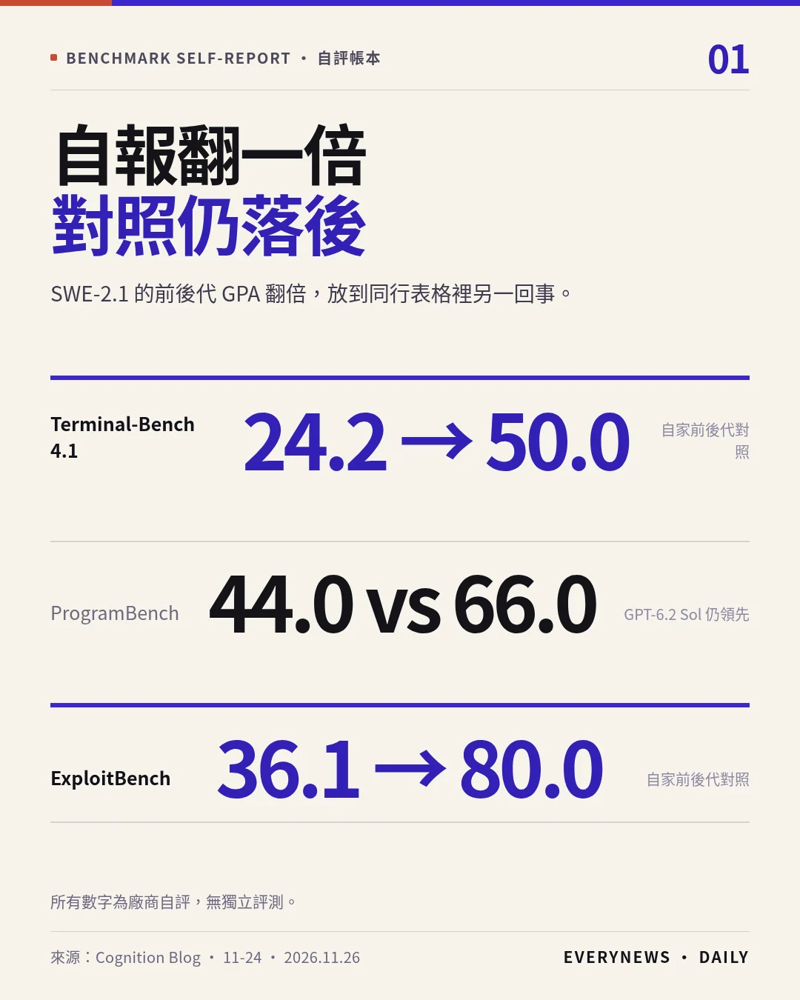
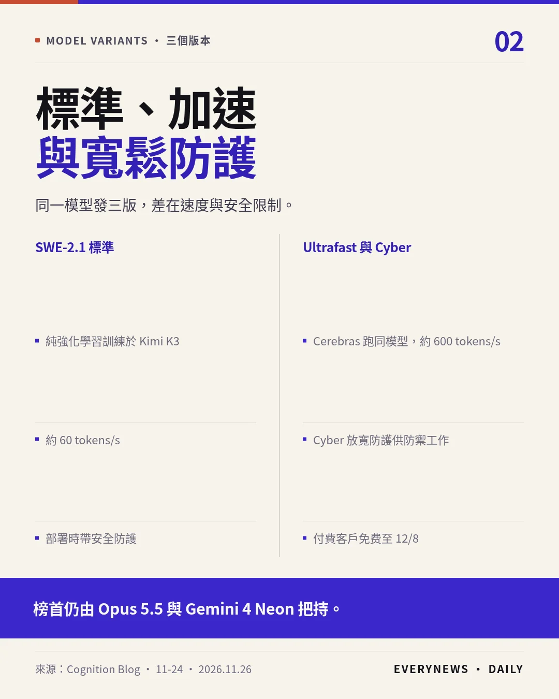

Cognition 放出 SWE-2.1，自报把 Terminal-Bench 4.1 从 24.2 拉到 50.0，ExploitBench 从 36.1 提到 80.0，数字看着像翻了一倍。翻到官方那张对照表，Claude Opus 5.5 和 Gemini 4 Neon 在多数基准上仍压着它，ProgramBench 上 GPT-6.2 Sol 更是 66.0 对 44.0。自评只说明自家前后两代的变化，排行榜要等第三方用同一套评测框架跑过才算数。
翻倍的自报分数，对照表还压着一头

檢視原圖
檢視原圖| 主体 | Cognition，SWE-2.1 |
|---|---|
| 自报基准 | Terminal-Bench 4.1 由 24.2 到 50.0，ExploitBench 由 36.1 到 80.0 |
| 对照 | ProgramBench 上 GPT-6.2 Sol 为 66.0，SWE-2.1 为 44.0 |
| 训练 | 以纯强化学习训练于 Kimi K3，未写参数量 |
| 版本 | SWE-2.1、Ultrafast 与 Cyber，分别对应标准、Cerebras 加速与宽松防护 |
| 来源 | https://cognition.com/blog/swe-2-1 |